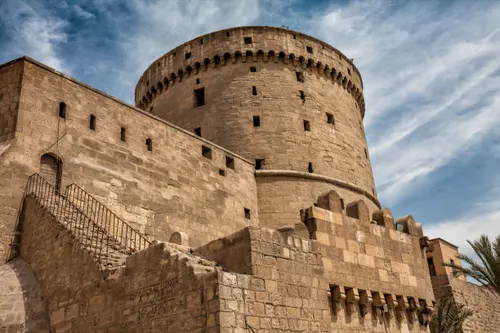
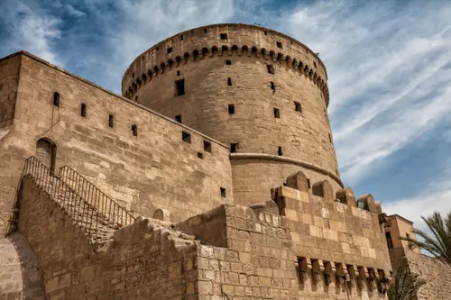
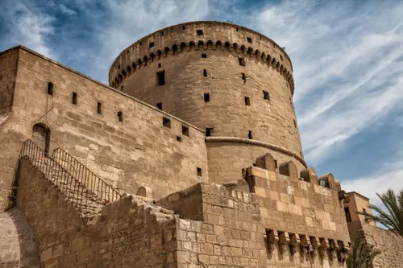
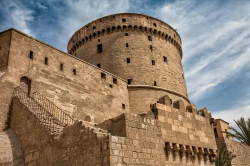

 

La Citadelle de Saladin est une imposante forteresse médiévale située sur une colline qui domine Le Caire. Construite au 12ème siècle par le sultan Saladin pour protéger la ville des croisés, elle fut le siège du pouvoir égyptien pendant près de 700 ans.
Ce complexe fortifié couvre une superficie d'environ 30 hectares et comprend plusieurs mosquées, palais, musées et terrasses offrant des vues spectaculaires sur la ville. La Mosquée Mohammed Ali en est le monument le plus visible, mais le site abrite également d'autres joyaux architecturaux comme la Mosquée d'al-Nasir Mohammed.
La construction débuta en 1176 sous les ordres de Saladin, utilisant des pierres provenant des petites pyramides de Gizeh. Elle fut agrandie et modifiée par les sultans mamelouks puis ottomans qui y ajoutèrent leurs propres constructions.
Jusqu'au 19ème siècle, la Citadelle servit de résidence aux dirigeants de l'Égypte. Mohammed Ali Pacha, considéré comme le fondateur de l'Égypte moderne, y fit construire sa célèbre mosquée et modernisa les installations militaires du site.